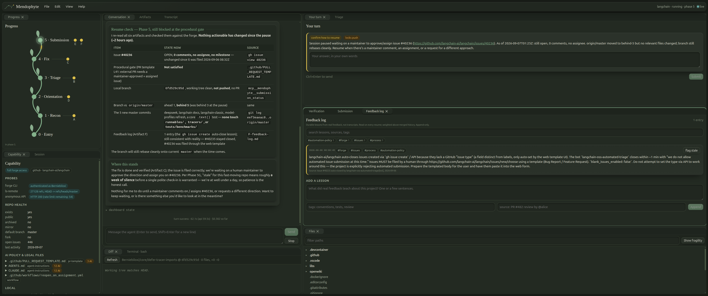

Contribute to open source with an agent that teaches while it works.
Mendophyte is a local cockpit built on the Claude Agent SDK. It walks a real contribution from first look to pull request, hands the learning-dense steps back to you, and never does anything irreversible without asking.
Runs on your machine against your own Claude Code login. No hosting, no account. Linux, macOS, Windows.
git clone https://github.com/Berniebiloxi/mendophyte.git cd mendophyte npm ci npm start
git pull npm ci npm start -- --replace

How a session goes
Six phases, read by the agent from six plain Markdown files you can read too. Click a phase on the vine, or let it grow.
What you see
Fifteen dockable panels. Drag, split, float, or pick a workflow preset and let the layout follow the phase.
Guardrails you can see
The agent's shell commands pass through a pattern check before they run. Anything on this list stops in a modal that shows the exact command and where it runs. The agent cannot proceed until you decide, and a decline reaches it with your reason.
Create a git commit
needs your go-aheadThe agent wants to run this in ~/Projects/seatsniper. Standing guardrail: git-commit.
- critical force-push, history rewrite (
--amend,rebase), hard reset, recursive delete - confirm
git commit,git push, opening a pull request - confirm any other write to the forge: issues, comments, reviews, forks, releases, mutating
gh apicalls - free reading, searching, running the project's own tests,
ghandgitreads - hook enforced as a Claude Code PreToolUse hook, so it holds even in bypass-permissions mode
Install
Four commands. Then point it at a clone of the project you want to help.
You need
Node.js 20.19 or newer. Claude Code installed and logged in. git and a clone. The GitHub CLI logged in is optional but moves you to full forge access.
Then
Session panel → paste the clone's path → Start session. Pre-flight runs, the agent reads the entry prompt and asks you two questions in Your turn.
Coming back
File → Open project… lists every repository you have worked on. The agent reads its own notes and asks how to continue.
Updating
git pull && npm ci && npm start -- --replace. The running instance hands over to the new code. Notes stay on disk; reopen the project.
If something looks wrong
Help → Debug log → Mark this moment, then send the file. Every request, event, click and error is in it, with tokens redacted. Most fixes so far came straight from one of those.